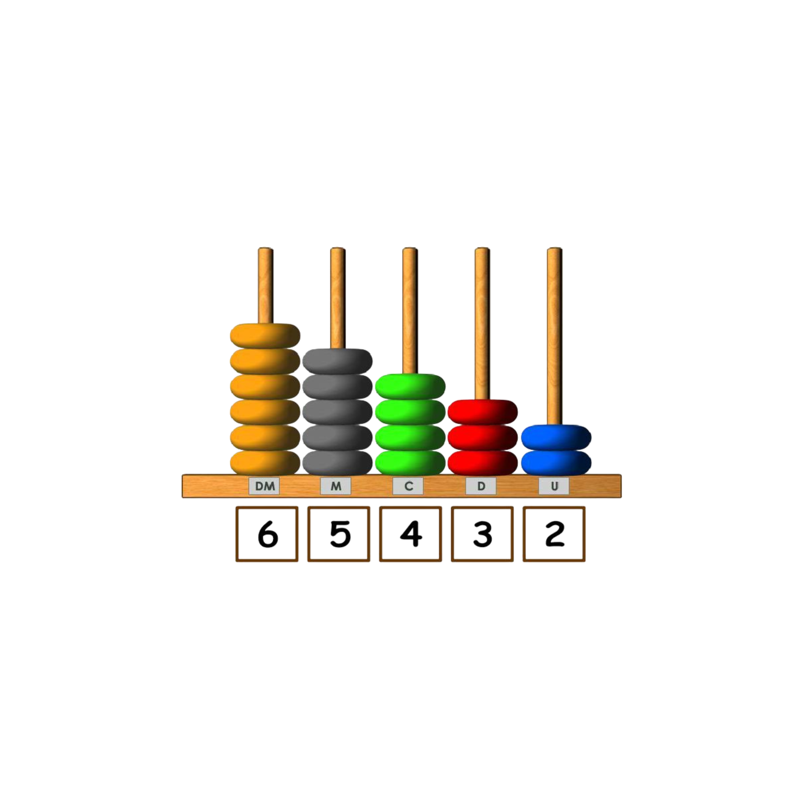
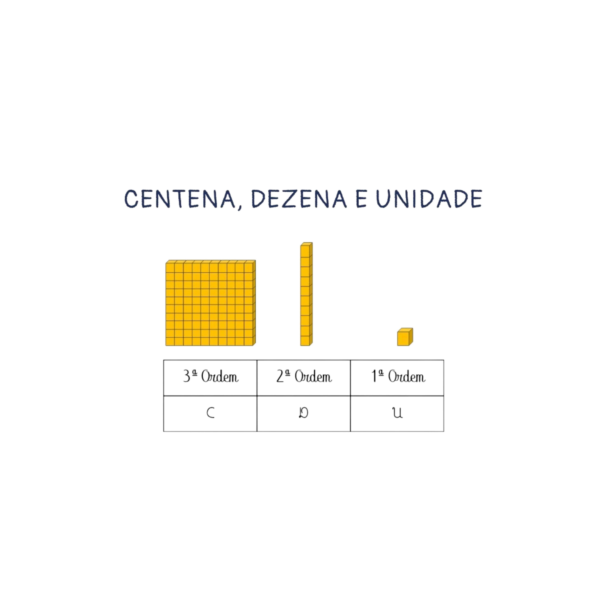
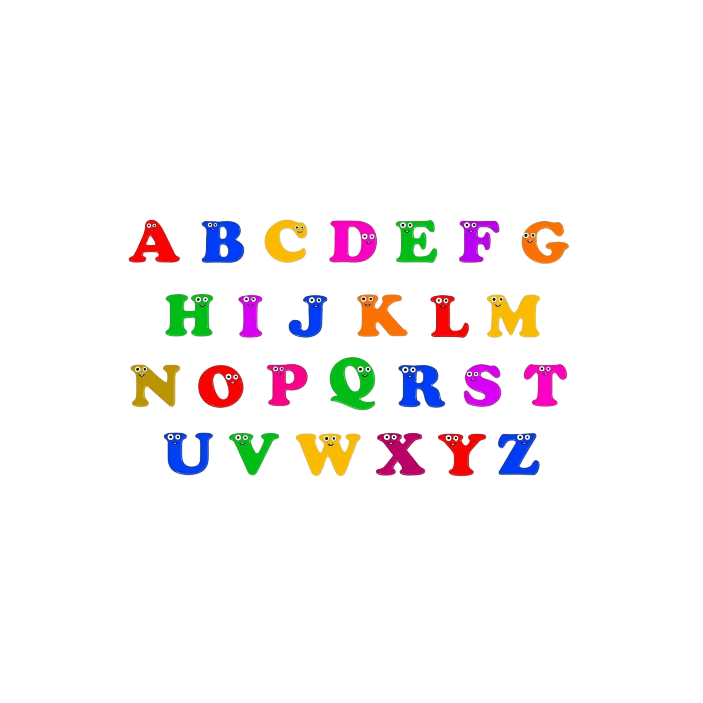
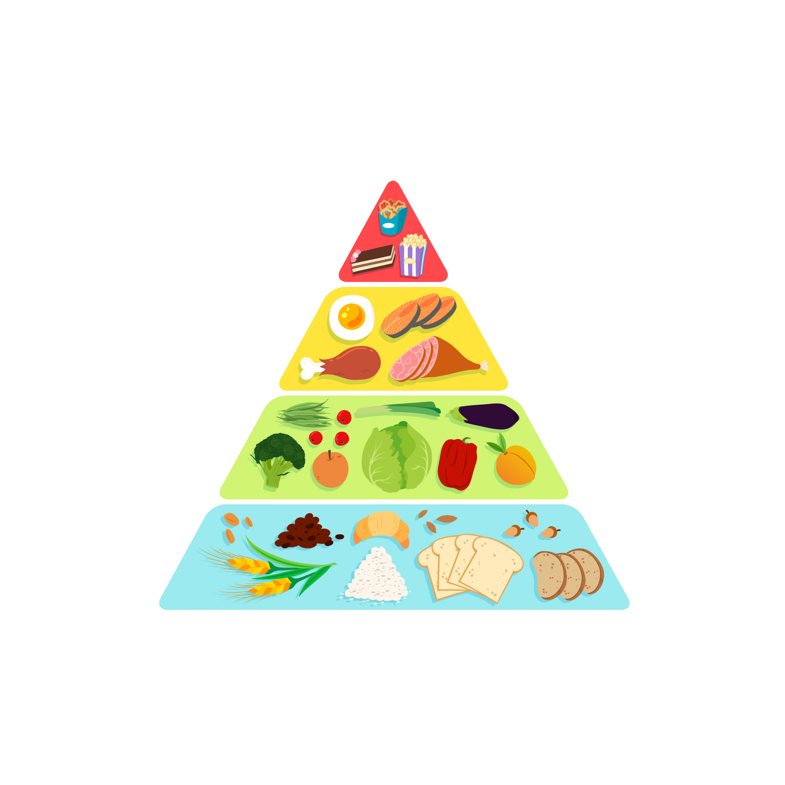
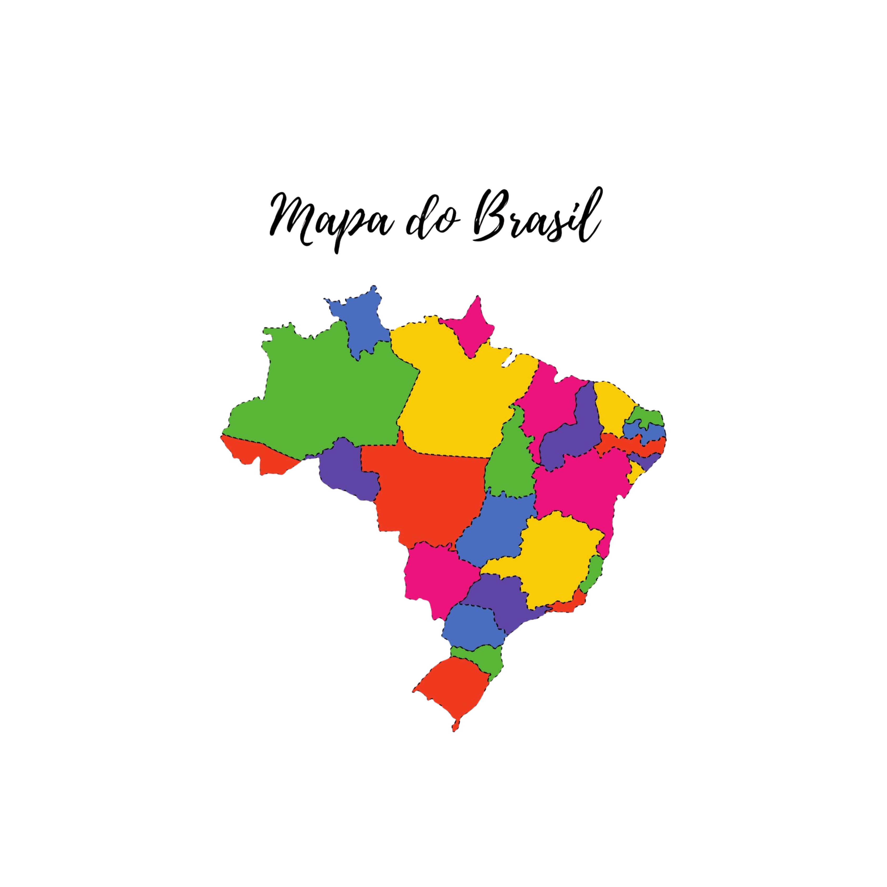
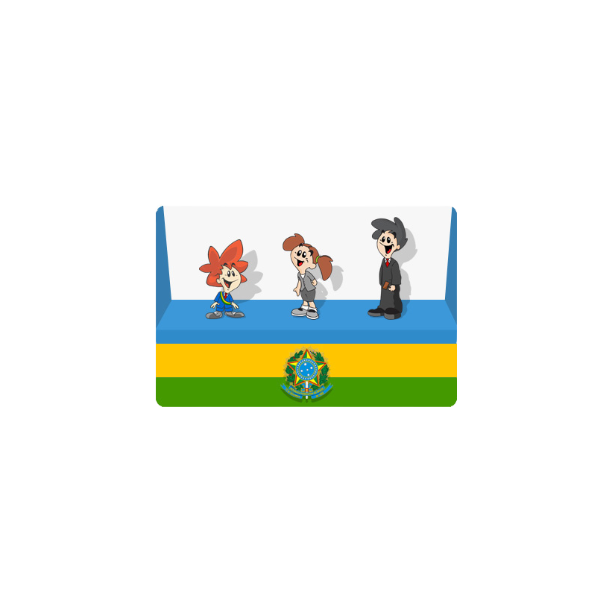

AmadoPlay
Ferramentas Educacionais Interativas

Ábaco Digital
Aprenda matemática de forma visual com nosso ábaco interativo e desenvolva habilidades numéricas.

Material Dourado
Explore o sistema decimal com blocos virtuais interativos e compreenda melhor os números.

Alfabeto Móvel
Forme palavras e desenvolva habilidades de leitura de forma lúdica e interativa.

Pirâmide alimentar
Pirâmide alimentar: Organize os alimentos nos níveis corretos da pirâmide.

Mapa do Brasil
Mapa do Brasil: Identifique estados e regiões interativamente.

Três poderes do Brasil
Três poderes do Brasil: Aprenda sobre Executivo, Legislativo e Judiciário.
Canal de Karaokê Educativo
Cante e aprenda com nosso canal especial! Músicas educativas e karaokê infantil para tornar o aprendizado ainda mais divertido e memorável.
🎵 Acessar Canal